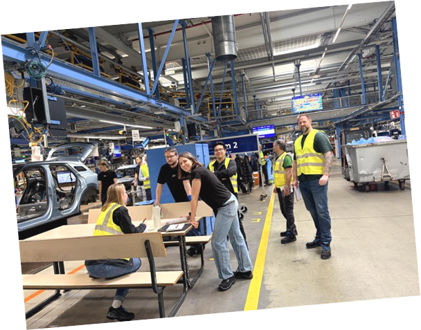

01 / I improve processes
Details ansehen ↗View details ↗
Mega Kaizen Cologne
Operational Excellence in sichtbarer, messbarer Umsetzung – bereichsübergreifend koordiniert.
Operational Excellence in visible, measurable execution across functions.
100+Teilnehmende
180+Ideen & Maßnahmen
€400k+Potenzial